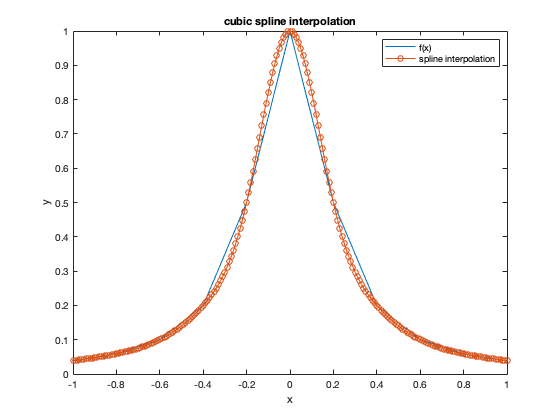

Contents
CS375 HOMEWORK 9
Juan Alejandro Ormaza November 2, 2021
clear all;clc;close all; format long g;
Problem 1
t=linspace(-1,1,11); f=@(x) 1./(1+25*x.^2); y=f(t); z=spline3_coeff(t,y); x_eval=-1:0.01:1; y_eval=zeros(1,length(x_eval)); for i=1:length(x_eval) y_eval(i)=eval_spline(x_eval(i),t,y,z); end plot(t,y); hold on plot(x_eval,y_eval,'-o'); xlabel('x') ylabel('y') title('cubic spline interpolation') legend('f(x)','spline interpolation') fprintf('the spline interpolation works really well near the endpoints and does not\n') fprintf('appear to have the same issues as the lagrange or polynomial interpolation\n') fprintf('with equispaced points.\n ')
the spline interpolation works really well near the endpoints and does not appear to have the same issues as the lagrange or polynomial interpolation with equispaced points.
Problem 2
% 2.a see attachments % 2.b see attachments % 2.c f_x=@(x) x*sin(x); exact_int = sin(pi)-pi*cos(pi); n=[4, 8, 16, 32]; h=(pi-0)./n; integrals= zeros(1,length(n)); error=zeros(1,length(n)); for i=1:length(n) integrals(i)=comp_trap_int(f_x,0,pi,n(i)); error(i) = abs(exact_int-integrals(i)); end p=zeros(1,length(n)-1); for i=1:length(n)-1 p(i)=log(error(i+1)/error(i))/log(h(i+1)/h(i)); end p=[0 p]; fprintf(" n approx integral\t error\t convergence p\n"); fprintf("%2d %2.10f\t %2.10f\t %2.10f\n",[n;integrals ;error; p]) fprintf("since the expected convergence for composite trapezoid is 2, it is possible to see\n") fprintf("that as n increases, the convergence gets closer and closer to 2. indicating that the\n") fprintf("expected convergence is being found.\n") % 2.d see attachments
n approx integral error convergence p 4 1.6698795626 1.4717130910 0.0000000000 8 2.6880135827 0.4535790709 1.6980704688 16 3.0186727993 0.1229198543 1.8836361114 32 3.1097827181 0.0318099355 1.9501686104 since the expected convergence for composite trapezoid is 2, it is possible to see that as n increases, the convergence gets closer and closer to 2. indicating that the expected convergence is being found.